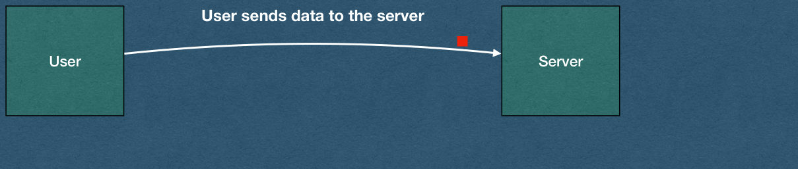
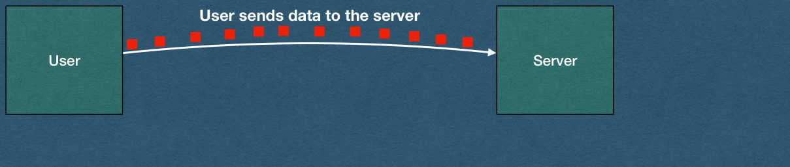

Handling Large Files
CSE312 — Web Development
Buffering large uploads, identifying file types, and serving large files with Range requests
Buffering Uploads
TCP Reminder
- TCP creates a persistent connection
- Bytes are streamed over this connection
- Data can be sent and received until one side closes the connection
- With small GET requests
- Read from the TCP socket once to read the entire request
Buffering File Uploads
- To read an HTTP request:
- First, read data from the TCP socket
buffer := make([]byte, 2048)
bytesRead, err := reader.Read(buffer)POST /form-path HTTP/1.1
Content-Length: 746
Content-Type: multipart/form-data; boundary=----WebKitFormBoundarycriD3u6M0UuPR1ia
------WebKitFormBoundarycriD3u6M0UuPR1ia
Content-Disposition: form-data; name="commenter"
Jesse
------WebKitFormBoundarycriD3u6M0UuPR1ia
Content-Disposition: form-data; name="upload"; filename="discord.png"
Content-Type: image/png
<bytes_of_the_file>
------WebKitFormBoundarycriD3u6M0UuPR1ia--Buffering File Uploads
- The size of the buffer is the maximum number of bytes that will be read from the TCP socket
bytesReadis how many bytes were actually read
buffer := make([]byte, 2048)
bytesRead, err := reader.Read(buffer)POST /form-path HTTP/1.1
Content-Length: 746
Content-Type: multipart/form-data; boundary=----WebKitFormBoundarycriD3u6M0UuPR1ia
------WebKitFormBoundarycriD3u6M0UuPR1ia
Content-Disposition: form-data; name="commenter"
Jesse
------WebKitFormBoundarycriD3u6M0UuPR1ia
Content-Disposition: form-data; name="upload"; filename="discord.png"
Content-Type: image/png
<bytes_of_the_file>
------WebKitFormBoundarycriD3u6M0UuPR1ia--Buffering File Uploads
- What if we receive a fairly large POST request?
- Might not be able to read the entire request in one read from the socket
buffer := make([]byte, 2048)
bytesRead, err := reader.Read(buffer)POST /form-path HTTP/1.1
Content-Length: 91320
Content-Type: multipart/form-data; boundary=----WebKitFormBoundarycriD3u6M0UuPR1ia
------WebKitFormBoundarycriD3u6M0UuPR1ia
Content-Disposition: form-data; name="commenter"
Jesse
------WebKitFormBoundarycriD3u6M0UuPR1ia
Content-Disposition: form-data; name="upload"; filename="flamingo.jpg"
Content-Type: image/jpeg
<bytes_of_the_file>
------WebKitFormBoundarycriD3u6M0UuPR1ia--Buffering File Uploads
- What if a very large file is uploaded?
- We read at most 2048 bytes per read
- A bigger buffer doesn't help. The rest of the bytes may not have arrived yet
buffer := make([]byte, 2048)
bytesRead, err := reader.Read(buffer)POST /form-path HTTP/1.1
Content-Length: 1884206
Content-Type: multipart/form-data; boundary=----WebKitFormBoundarycriD3u6M0UuPR1ia
------WebKitFormBoundarycriD3u6M0UuPR1ia
Content-Disposition: form-data; name="commenter"
Jesse
------WebKitFormBoundarycriD3u6M0UuPR1ia
Content-Disposition: form-data; name="upload"; filename="hq_image.png"
Content-Type: image/png
<bytes_of_the_file>
------WebKitFormBoundarycriD3u6M0UuPR1ia--Buffering File Uploads
- We must read from the socket multiple times!
buffer := make([]byte, 2048)
bytesRead, err := reader.Read(buffer)POST /form-path HTTP/1.1
Content-Length: 1884206
Content-Type: multipart/form-data; boundary=----WebKitFormBoundarycriD3u6M0UuPR1ia
------WebKitFormBoundarycriD3u6M0UuPR1ia
Content-Disposition: form-data; name="commenter"
Jesse
------WebKitFormBoundarycriD3u6M0UuPR1ia
Content-Disposition: form-data; name="upload"; filename="hq_image.png"
Content-Type: image/png
<bytes_of_the_file>
------WebKitFormBoundarycriD3u6M0UuPR1ia--Buffers
- TCP socket libraries use buffers
- No matter your language/library you will have a method/function that reads bytes from the socket
- Called when there are bytes that arrive over the socket
- Returns some bytes of the request

Buffer Questions
- What happens when the user has a lot of data to send?
- What if the user has a slow connection?
- Does the socket server wait for all of the data to be received before calling your code?
- What if the data takes an hour to send?
- What if the data contains streaming video that never ends?

Buffer Answer
- The socket notifies your code when there is data to read - even if it's not the entire request
- The socket will have a buffer size, typically a few kB, and will read at most that many bytes in a single call
- For GET requests the entire request is smaller than the buffer (Safe assumption in this course)

Buffers
- Now that we're handling file uploads, we must be aware of these buffers
- The server will need data that persists across multiple calls that read bytes from a socket
- Create data structures that store the bytes read from a request
- Combine the bytes from multiple calls to receive the entire file

HTTP Buffers
- When receiving a large HTTP request:
- Read bytes from the socket
- Parse the headers
- Find the Content-Length header and store this value
- Keep reading bytes from the socket until you have read Content-Length bytes after the first
\r\n\r\n - Process the request
- Remember that the Content-Length does not include the bytes for the headers
- The total number of bytes read for one request will be larger than the Content-Length
Common Buffering Bugs
Readreturns how many bytes it read. Only use that many
bytesRead, err := reader.Read(buffer)
body = append(body, buffer...) // Wrong: Always appends 2048 bytes
body = append(body, buffer[:bytesRead]...) // Right: Only the bytes that were readReadreuses the same buffer every time- Copy the bytes out before the next
Readoverwrites them (appendcopies) - Careful with slices of
buffer(eg. the body from your first parse)
- Copy the bytes out before the next
- If
Readreturns an error, the client disconnected mid-upload- Stop reading and close the connection. Don't wait forever for bytes that will never arrive
- Never convert the body to a string while buffering. Binary data will be corrupted
Assumptions
- Assumptions you may make on the HW:
- The first read will contain all the headers of the request
- Use a buffer of at least 2048 bytes
- You can safely parse the first bytes as the headers of the request (up to the first
\r\n\r\n) - This allows you to read the Content-Length before you start buffering
- We will test with files much larger than your buffer size
- Your buffering must work for any size (eg. A 1 GB video)
- Do not read the entire body with one huge read:
make([]byte, 1000000000) - Do not use functions that buffer for you (eg.
io.ReadAllorio.ReadFull)
Serving Large Files
The Problem
- Your server hosts a 1 GB mp4
- A user opens the video and immediately skips to the middle
- They should not have to download the first 500 MB
- A user watches 10 seconds and leaves
- Your server should not send the other 990 MB
- Reading the whole file into memory for every request is also a problem
- 20 viewers can be 20 GB of RAM
Range Requests
- HTTP lets the client ask for part of a file
- The client adds a
Rangeheader with the bytes it wants - The server responds with
206 Partial Contentand only those bytes - Browsers do this automatically for
<video>elements- Only if your server says it supports ranges
- The browser requests the bytes it needs to start playing, then whichever part of the video the user skips to
Accept-Ranges
- Tell the browser that your server supports range requests
- Include
Accept-Ranges: bytesin every response for an mp4- Including responses with the entire file
- Without this header, the browser may download the entire file and might not let the user skip ahead
HTTP/1.1 200 OK
Content-Type: video/mp4
Content-Length: 10000
Accept-Ranges: bytes
X-Content-Type-Options: nosniff
<all 10000 bytes of the file>The Range Header
GET /public/videos/abc123.mp4 HTTP/1.1
Range: bytes=0-99- Positions are byte offsets in the file, starting at 0
- Three forms:
| Range | Meaning |
|---|---|
bytes={first}-{last} |
Bytes first through last, inclusive |
bytes={first}- |
Bytes first through the end of the file |
bytes=-{n} |
The last n bytes of the file |
- A client can ask for several ranges at once (
bytes=0-50,100-150)- Not required for HW. Browsers don't do this for video
206 Partial Content
HTTP/1.1 206 Partial Content
Content-Type: video/mp4
Content-Length: 100
Content-Range: bytes 0-99/10000
Accept-Ranges: bytes
X-Content-Type-Options: nosniff
<bytes 0 through 99 of the file>Content-Range: bytes {first}-{last}/{total}firstandlastare the bytes you actually senttotalis the size of the entire file
Content-Lengthis the number of bytes in this response, not the size of the filelast - first + 1
Off By One
- Ranges are inclusive on both ends
bytes=0-99is 100 bytes, not 99- The last byte of a 10000 byte file is at position 9999
- Go slices are exclusive on the end
data[first : last+1] // Bytes first through last, inclusive
length := last - first + 1- Off-by-one errors are the most common bug in range requests
- Your Content-Length won't match the bytes you send
- The video may play for a while, then stop or corrupt
416 Range Not Satisfiable
- If
firstis past the end of the file, there are no bytes to send - Respond with
416 Range Not Satisfiable Content-Rangeuses*for the range and still includes the total size
HTTP/1.1 416 Range Not Satisfiable
Content-Range: bytes */10000
Content-Length: 0Limiting Response Size
- When a video first loads, browsers often request
bytes=0-- Technically the entire file
- You may send fewer bytes than requested for an open-ended range
- eg. At most 2 MB per response
- Content-Range must describe the bytes you actually sent
- The browser will request the rest when it needs them
GET /public/videos/abc123.mp4 HTTP/1.1
Range: bytes=0-HTTP/1.1 206 Partial Content
Content-Range: bytes 0-2097151/1073741824
Content-Length: 2097152What the Browser Does
- Requests
bytes=0-when the video loads - Reads enough to start playing, then may close the connection in the middle of your response
- Requests a new range when the user skips ahead
- May request the end of the file
- Some mp4s store their index at the end of the file
- Browser behavior varies between browsers and videos
- Handle every form, even if your browser never sends it
Closed Connections
- The browser can close the connection while you are still sending
- Writing to a closed connection returns an error
- eg. "broken pipe" or "connection reset by peer"
- Your server must not crash
- Check the error from every write
- Stop sending, close the connection, and return from the handler
Testing Range Requests
- Browser behavior is unpredictable. Use curl to send exactly the Range you want to test
-D -prints the response headers,-osaves the body
curl -s -D - -o part.bin -H "Range: bytes=0-99" http://localhost:8080/public/videos/test.mp4HTTP/1.1 206 Partial Content
Content-Range: bytes 0-99/10000
Content-Length: 100- Check that
part.binis exactly 100 bytes - Test every form, a range past the end, and a request with no Range header
- The Network tab in your browser's dev tools shows the Range and Content-Range of every video request